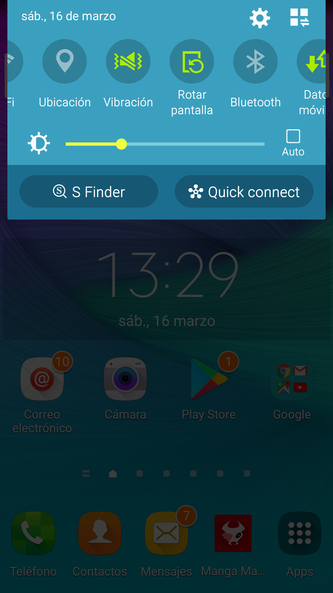
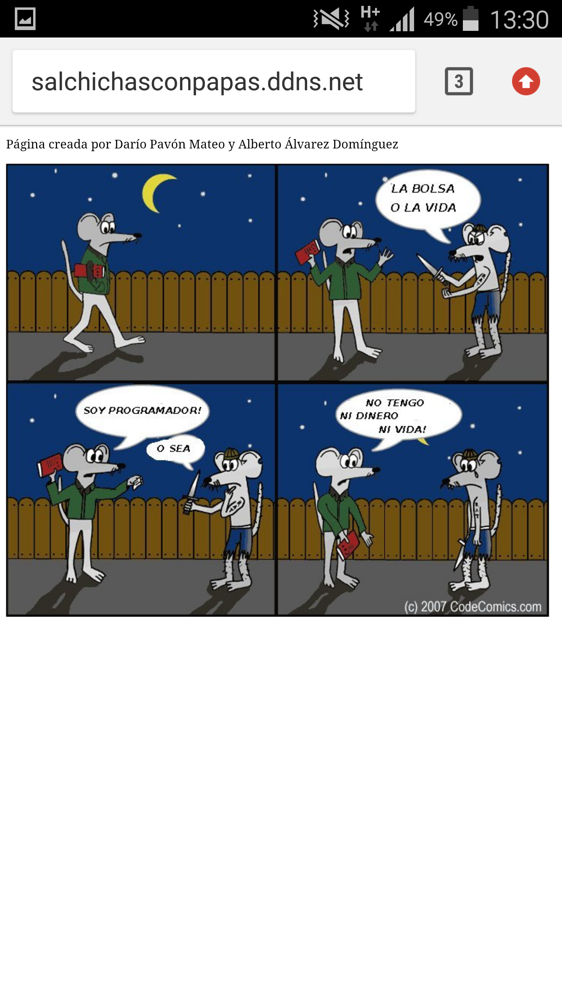

Servidor en Casa
Darío Pavón Mateo
Alberto Álvarez Dominguez
1º ASIR
Licencia Creativecommons

Theme by: reveal.js
¿Qué es un servidor web?
Los servidores web son ordenadores especializados que vuelven posible el Web hosting; en otras palabras, el servicio de hosting o alojamiento web es el alquiler de un espacio en un servidor para almacenar los archivos de nuestro sitio.

Instalación del servidor apache.

-
En linux es tan facil como
- comprueba que tienes los repositorios bien y la conexión a internet funciona
- Entrar como ROOT
- y simplemente introducir el comando aptget install apache2
Comprobación y personalización de la página inicial.

En la siguiente ruta creamos la raiz de la página web a mostrar
Configuramos la ip como estática para tener la misma siempre

Abrimos los puertos del router

Teniendo en cuenta que los puertos utilizados para páginas http son el 80 y que tenemos que poner la ip estatica de la máquina virtual .
Darse de alta en servidor DNS y conectarlo al router
Para así poder "falsear" una ip publica estatica

Acceder al servidor web desde el exterior
 Referencias
Nuestros propios conocimientos sobre la materia .